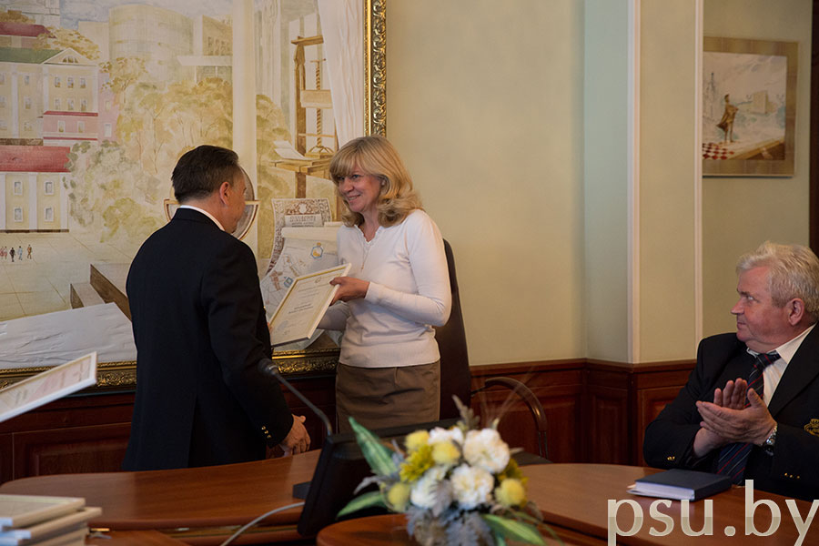

Факультет информационных технологий самый молодой в университете.
Он создан в сентябре 2008 года как ответ на запросы быстро меняющегося мира. Информационная «отрасль» -
одна из наиболее бурно развивающихся не только в нашем государстве, но и во всех передовых странах.
Известно, что успех работы любого механизма зависит от гармоничного взаимодействия его элементов. Это касается и работы коллектива, который должен стать одной командой с единой целью, приоритетами и стремлениями.
Факультет расположен в историческом здании бывшего Полоцкого коллегиума (УЛК №5 корпус В). Помещения кафедр и учебные аудитории оборудованы современными вычислительной техникой и коммуникационным оборудованием, объединены в высокоскоростную локальную сеть. Для изучения специальных и обще-профессиональных имеется 6 компьютерных классов, лаборатории сетевых технологий и периферийного оборудования, схемотехники и архитектуры ПЭВМ.
Профессорско-преподавательский состав: общее количество преподавателей 30 человек, из них 2 доктора и 8 кандидатов наук.
Список группы
| ФИО | Подробнее |
|---|---|
| Василий Пенка | Подробнее |
| Джирдж Донер | Подробнее |
| Эдуард Ивнов | Подробнее |
| Ещё студент | Подробнее |
| И еще | Подробнее |
| Лучший Студент | Подробнее |
Михнович Ольга Владимировна – ассистент:
